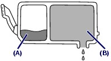
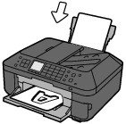
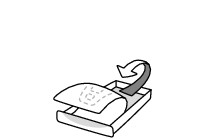
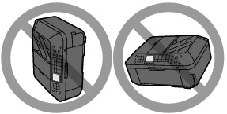
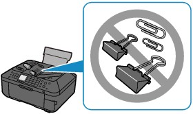

This section introduces the tips on how to use your machine and for printing with optimal quality.
 Ink is used for various purposes.
Ink is used for various purposes. How is ink used for various purposes other than printing?
How is ink used for various purposes other than printing?Ink may be used for purposes other than printing. Ink is not only used for printing, but also for cleaning the Print Head to maintain the optimal printing quality.
The machine has the function to automatically clean the ink jet nozzles to prevent clogging. In the cleaning procedure, ink is pumped out from the nozzles. Used ink for nozzle cleaning is limited to a small amount.
Does black-and-white printing use color ink?Black-and-white printing may use ink other than black ink depending on the type of printing paper or the settings of the printer driver. So, color ink is consumed even when printing in black-and-white.
Why does the machine have two black ink tanks?There are two kinds of black ink in the machine: dye ink (BK) and pigment ink (PGBK).
The dye ink is used mainly for printing photos, illustration, etc., and the pigment ink is used for text-based documents. Each has different purposes so that even if one runs out, another will not be used instead. If either of them runs out, the ink tank replacement is required.
These two inks are automatically used depending on the type of printing paper or the settings of the printer driver. You cannot change the usage of these inks yourself.
Ink lamp indicates when ink is running low.The inside of the ink tank consists of (A) the part where ink is preserved and (B) the sponge with absorbed ink.

When the ink (A) runs out, the ink lamp flashes slowly to indicate that the ink is running low.
Then, when the ink (B) runs out, the ink lamp flashes fast to indicate that the ink tank needs to be replaced with a new one.
Printing on special paper: How to print with optimal quality!? Tip!: Check the machine status before printing! Is the Print Head OK?
Is the Print Head OK?If print head nozzles are clogged, print will be faint and papers will be wasted. Print the nozzle check pattern to check the Print Head.
See When Printing Becomes Faint or Colors Are Incorrect.
Is the inside of the machine smeared with ink?After printing large quantities of paper or performing borderless printing, the area where papers go through may get smeared with ink. Clean the inside of your machine with the Bottom Plate Cleaning.
Refer to the on-screen manual: Advanced Guide.
Tip!: Check how to load the paper correctly! Is the paper loaded in the correct orientation?When loading paper in the Rear Tray or Cassette, make sure the orientation of paper.
|
 |
 |
|
Rear Tray |
Cassette |
To load paper in the Rear Tray, load paper with the printing side facing you. |
To load paper in the Cassette, load paper with the printing side facing down. |
Is the paper curled?The curled paper causes paper jam. Flatten the curled paper, then reload it.
Refer to "Troubleshooting" in the on-screen manual: Advanced Guide.
Tip!: After loading paper, be sure to specify the paper settings!After loading paper, be sure to select the loaded paper for Type with the Operation Panel or Media Type with the printer driver. If the type of paper is not selected, you may not be able to get the satisfactory print result.
There are various types of paper: paper with special coating on the surface for printing photos with optimal quality and paper suitable for documents. Type of the Operation Panel or Media Type of the printer driver has different settings for each type of paper in advance (such as using ink, ejecting ink, or distance from nozzles) so that you can print on each paper with the optimal image quality. You can print with different settings in Type (or Media Type) suitable for each type of loaded paper.
Use the Stop button to cancel printing! Tip!: Never press the ON button!If you press the ON button while printing is in progress, the print data sent from the computer queues in the machine and you may not be able to continue to print.
Press the Stop button to cancel printing.
Does the machine need to be handled with care when using or transporting? Tip!: Do not use or transport the machine vertically or slanted!If the machine is used or transported vertically or slanted, the machine may become damaged or ink may leak from the machine.
Be sure not to use or transport the machine vertically or slanted.

Tip!: Do not place any object on the Document Cover!Do not place any object on the Document Cover. It will fall into the Rear Tray when the Document Cover is opened and cause the machine to malfunction.
Also, place the machine where objects will not fall on it.

Tip!: Carefully choose the area to place the machine! Note when you place the machine near other electrical appliances such as fluorescent lampsPlace the machine at least 5.91 inches / 15 cm away from other electrical appliances such as fluorescent lamps. If the machine is placed closer to those, it may not be able to work properly due to fluorescent noises.
Note when you use the machine on wireless LANSince the microwave oven and the wireless LAN system use the same frequency bandwidth, the microwave oven can be the potential source of interference when the microwave oven is on.
Placing this machine close to microwave oven may result in the poor status of radio.
How to maintain the optimal printing quality?The key to printing with the optimal printing quality is to prevent the Print Head from drying or clogging. Always follow the following steps for optimal printing quality.
Follow the procedure below to disconnect the power plug.1. Press the ON button on the machine to turn it off.
2. Make sure that all lamps on the Operation Panel are not lit.
3. Disconnect the power plug from the wall outlet.
If you press the ON button to turn off the power, the machine caps the Print Head (nozzles) automatically to prevent from drying. If you disconnect the power plug from the wall outlet before all lamps on the Operation Panel are turned off, the Print Head will not be capped properly and this will cause drying or clogging.
To disconnect the power plug, be sure to follow this procedure.
 Important Important
|
Print periodically!Just as the tip of a felt pen becomes dry and unusable if it has not been used for a long time, even if it is capped, the Print Head too, may become dried or clogged if the machine has not been used for a long time.
We recommend you to use the machine at least once a month.
 Note Note
|
Colors are uneven, and print results are blurred. Tip!: Print the nozzle check pattern to check if the nozzles are clogged.If the print head nozzles are clogged, colors may become uneven or the print results may be blurred.
In this case
Print the nozzle check pattern
Check the printed check pattern to see if the nozzles are clogged.
See When Printing Becomes Faint or Colors Are Incorrect.